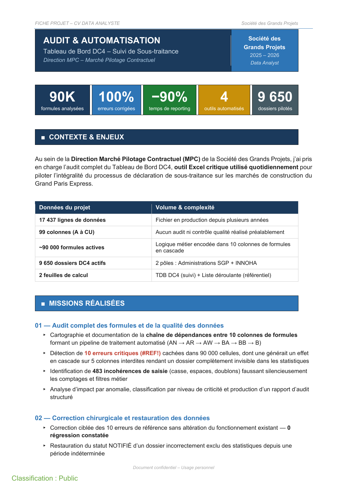
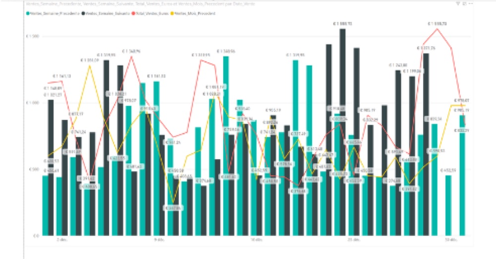
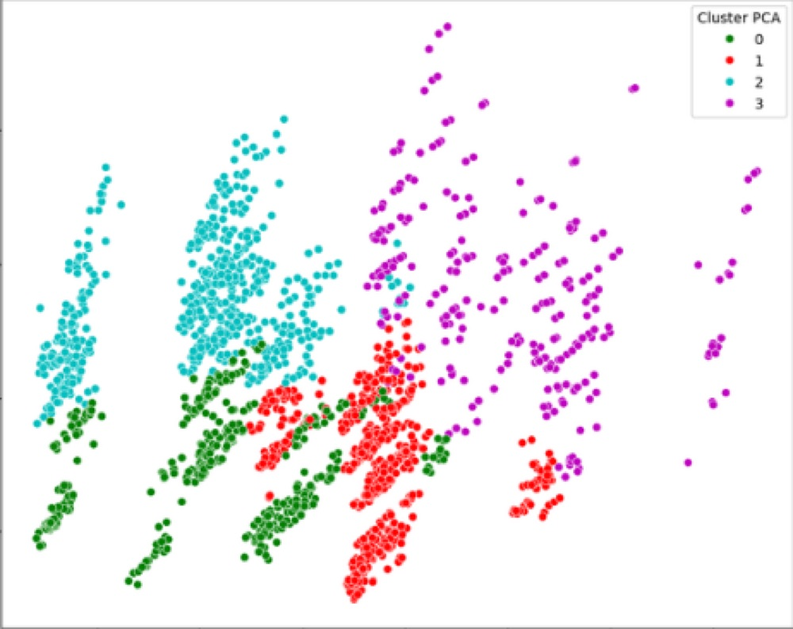
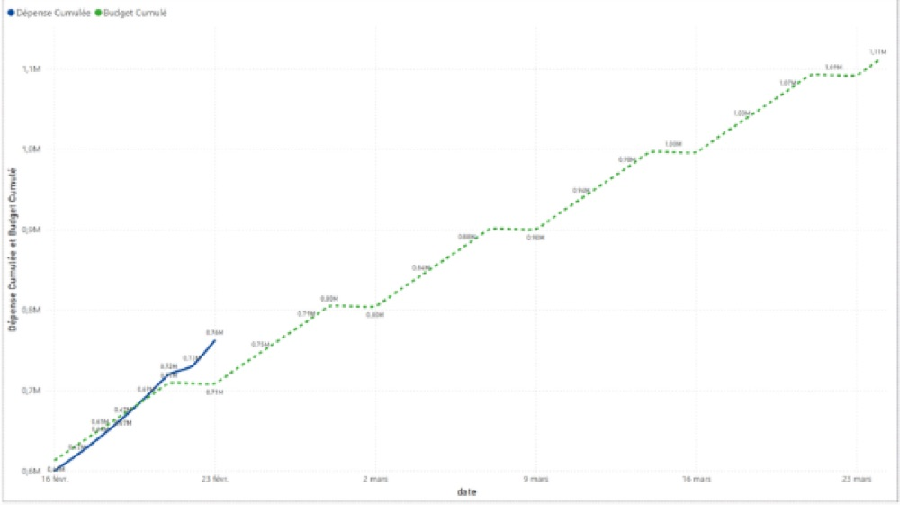
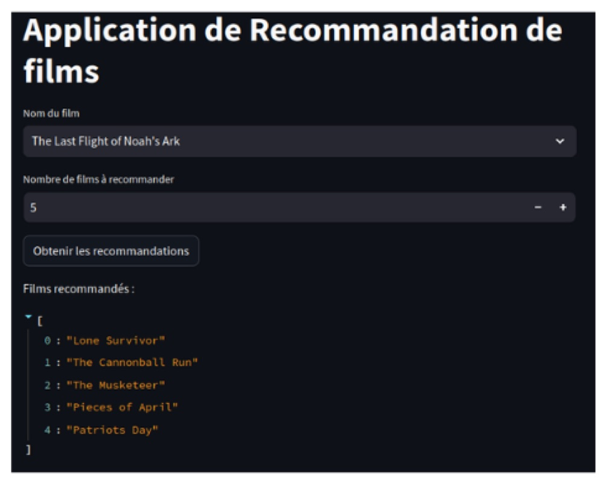
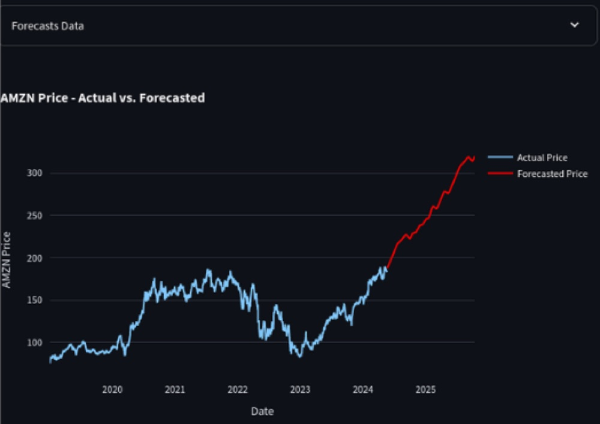
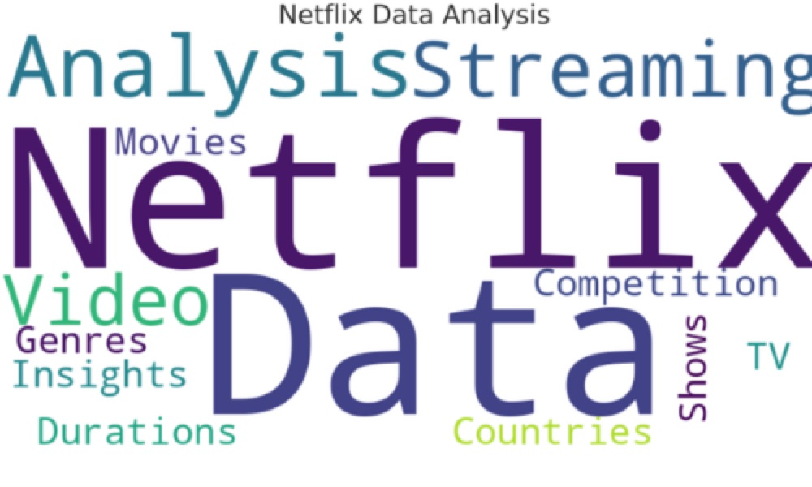

Data Analyst
Nettoyage, analyses SQL, statistiques, synthèses exécutives et recommandations actionnables.
Data Analyst orienté métier, je construis des analyses SQL, dashboards Power BI, automatisations Python et modèles ML pour aider les équipes à comprendre ce qui se passe, prioriser les actions et gagner du temps sur le reporting.
Lecture recruteur
Le portfolio est structuré pour montrer rapidement ce que je peux apporter selon le poste : analyse, BI, data quality, marketing/product analytics, machine learning ou analytics engineering.
Nettoyage, analyses SQL, statistiques, synthèses exécutives et recommandations actionnables.
Modélisation Power BI, DAX, KPIs, dashboards automatisés et reporting direction.
Churn, conversion, segmentation RFM, campagnes, A/B testing et analyse de cohortes.
Classification, clustering, NLP, recommandation, séries temporelles et explicabilité.
ETL/ELT, qualité des données, documentation, modèles analytiques et automatisation.
Preuves visibles
Ces projets montrent ce qui intéresse le plus un recruteur : impact métier, volume traité, livrables documentés et capacité à passer de la donnée brute à une décision.

Audit complet d'un outil Excel de suivi opérationnel, correction des anomalies et automatisation du reporting pour fiabiliser la décision métier.

Conception d'un système de pilotage commercial et budgétaire pour centraliser les KPIs, réduire les reportings manuels et accélérer la lecture directionnelle.

Transformation d'une base clients en segments actionnables pour prioriser les campagnes, personnaliser les messages et mieux allouer le budget marketing.
Projets sélectionnés
Chaque projet met en avant le contexte, l'action menée, les outils et le résultat attendu. Les projets confidentiels sont présentés avec données anonymisées ; les projets solo sont reliés aux repos publics.
Analyse SQL d'une base clients pour identifier les profils qui résilient et prioriser les actions de rétention.
Centralisation des ventes mensuelles, nettoyage des anomalies et dashboard de KPIs pour le pilotage commercial.

Suivi des dépenses par catégorie, évolution mensuelle et lecture des postes à optimiser pour piloter le budget.
Conception d'un modèle en étoile pour rendre les analyses de vente accessibles en self-service aux équipes métier.
Détection des doublons, emails invalides, champs incomplets et règles de normalisation pour améliorer l'efficacité commerciale.
Création de segments clients actionnables pour personnaliser les campagnes et identifier les clients à réactiver.

Système de suggestion basé sur le contenu pour améliorer l'engagement et pousser les bons produits aux bons utilisateurs.

Modèles de séries temporelles pour anticiper la demande ou les prix à court horizon et aider à planifier les décisions.
Classification supervisée pour identifier les dossiers ou transactions à risque, avec priorité donnée à l'explicabilité.
Pipeline PySpark sur données volumineuses pour explorer les tendances, horaires et zones à risque.

Exploration d'un catalogue streaming pour comprendre les genres, pays, formats et tendances de publication.
Analyse des flux d'entrée/sortie pour réduire les ruptures, suivre les produits critiques et améliorer le pilotage opérationnel.
Remplacement de fichiers Excel manuels par une chaîne de reporting rafraîchie et documentée pour les équipes métier.
Récupération de données API et bases sources, transformation, contrôles qualité et chargement vers un modèle analytique exploitable.
Compétences
Je ne présente pas seulement des technologies : chaque compétence correspond à un usage recruteur concret.
Churn, ventes, promotions, A/B testing, cohortes, analyse de tendances et synthèse de recommandations.
KPIs, modèles en étoile, DAX, Power Query, tableaux de bord directionnels et rapports exploitables.
Détection d'anomalies, doublons, règles métier, dictionnaire de données, traçabilité et adoption utilisateur.
Classification, clustering, NLP, recommandation et prévision, avec priorité à l'interprétation business.
Scripts Python, ETL/ELT, contrôles qualité, refresh récurrent et préparation de données pour les analystes.
Méthode
Je travaille pour que le livrable soit utilisable par une équipe, pas seulement correct techniquement.
Clarifier le besoin, les utilisateurs, les KPIs et la décision à prendre avant de modéliser.
Contrôler les sources, gérer les doublons, valeurs manquantes, règles métier et définitions.
SQL, Python, Power BI ou ML selon le problème, avec une restitution claire et testable.
Expliquer les choix, rendre le dashboard compréhensible et accompagner l'utilisation métier.
Dès le premier mois
L'objectif est simple : arriver, comprendre les priorités métier, sécuriser les données et livrer des analyses utiles sans attendre plusieurs mois.
Détecter doublons, valeurs manquantes, erreurs de format et incohérences qui faussent les KPIs.
Transformer un fichier Excel ou un suivi manuel en dashboard Power BI clair et réutilisable.
Clarifier les définitions métier, documenter les règles de calcul et rendre les indicateurs fiables.
Analyser ventes, churn, CRM, stocks ou campagnes pour recommander des actions concrètes.
À propos
Mon fil conducteur : prendre des données dispersées, parfois peu fiables, et les transformer en indicateurs utiles pour les équipes métier. J'aime les projets où l'analyse débouche sur une action : réduire un churn, améliorer une campagne, automatiser un reporting, prioriser un stock ou expliquer un risque.
Mes projets couvrent l'analytics généraliste, la BI, le CRM/marketing, le machine learning, la data quality et l'automatisation. Cette largeur me permet de dialoguer avec des profils business comme avec des profils techniques.
Je recherche une équipe qui veut construire des analyses propres, des dashboards réellement utilisés et des pipelines suffisamment fiables pour soutenir les décisions au quotidien.
Contact
Je suis disponible pour échanger sur une opportunité Data Analyst, BI Analyst, Analytics Engineer junior ou un poste data orienté reporting, qualité et décision.